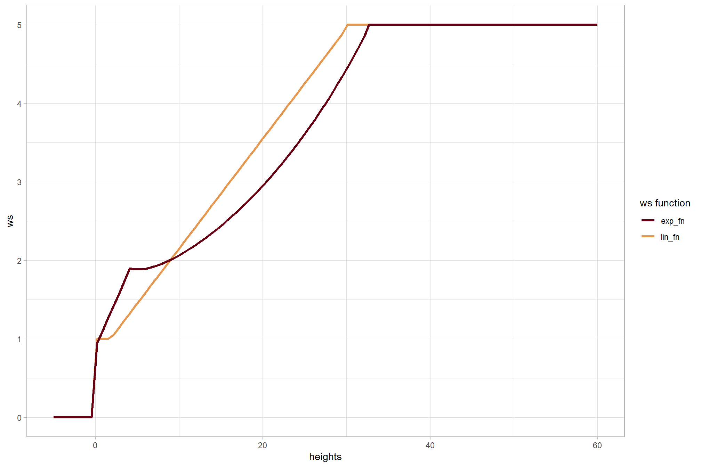
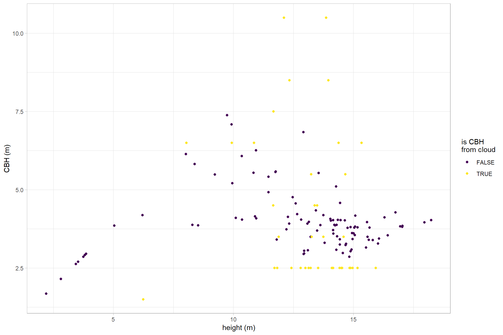

Section 2 Point Cloud Processing
In this section we’ll process the raw point cloud data using the cloud2trees R package developed to provide accessible routines for processing point cloud data collected by airborne lidar or generated using UAS imagery and photogrammetry (e.g. structure from motion).
The cloud2trees package can be installed by following the directions listed in the README file on GitHub. If one is still experiencing difficulties installing the package, see the example.R file which details how to install the package using a virgin R instance.
## remotes helps us get packages hosted on github
install.packages("remotes")
## get cloud2trees
remotes::install_github(repo = "georgewoolsey/cloud2trees", upgrade = F)Load the standard libraries we use to do work
# bread-and-butter
library(tidyverse) # the tidyverse
library(viridis) # viridis colors
library(harrypotter) # hp colors
library(RColorBrewer) # brewer colors
library(scales) # work with number and plot scales
library(latex2exp)
# visualization
library(mapview) # interactive html maps
library(kableExtra) # tables
library(patchwork) # combine plots
# spatial analysis
library(terra) # raster
library(sf) # simple features
library(lidR) # lidar data
library(cloud2trees) # the cloud2trees2.1 Lidar Data Location
Let’s check out the lidar data we got from the Mogollon Rim area of the Coconino National Forest about 20 km north of Payson, Arizona, USA using the USGS LidarExplorer.
# directory with the downloaded .las|.laz files
f <- "e:/lidar_phys_fire_mods/data/mogollon_rim_az_lidar/"
# is there data?
list.files(f, pattern = ".*\\.(laz|las)$") %>% length()## [1] 42## [1] "USGS_LPC_AZ_USFS_3DEP_Processing_2019_D20_w0467n3808.laz"
## [2] "USGS_LPC_AZ_USFS_3DEP_Processing_2019_D20_w0467n3809.laz"
## [3] "USGS_LPC_AZ_USFS_3DEP_Processing_2019_D20_w0467n3810.laz"We’ll plot our point cloud data tiles real quick to orient ourselves
2.2 Individial Tree Detection Tuning: itd_tuning()
The cloud2trees package performs individual tree detection using lidR::locate_trees() with the lidR::lmf() algorithm. The local maximum filter algorithm allows for a constant window size or a variable window size defined by a function. See the lidR package book section by point cloud processing expert Jean-Romain Roussel for excellent detail on ITD and defining window size.
The itd_tuning() function is used to visually assess tree crown delineation results from different window size functions used for the detection of individual trees. itd_tuning() allows users to test different window size functions on a sample of data to determine which function is most suitable for the area being analyzed. The preferred function can then be used in the ws parameter in raster2trees() and cloud2trees().
Let’s run itd_tuning() on our data starting with default window size functions
# run itd_tuning()
itd_tuning_ans <- cloud2trees::itd_tuning(f)
# what did we get?
itd_tuning_ans %>% names()## [1] "plot_samples" "ws_fn_list"check the ws_fn_list return which includes the different window size functions tested
## List of 3
## $ lin_fn:function (x)
## $ exp_fn:function (x)
## $ log_fn:function (x)let’s look at the function definition for the linear function (lin_fn)
## function (x)
## {
## y <- dplyr::case_when(is.na(x) ~ 0.001, x < 0 ~ 0.001, x <
## 2 ~ 1, x > 30 ~ 5, TRUE ~ 0.75 + (x * 0.14))
## return(y)
## }
## <bytecode: 0x000001fde3a9a5a8>
## <environment: 0x000001fde3aacd38>let’s plot all of the functions we tested with our call to itd_tuning() using the defaults
# shape of the ws functions
ggplot() +
geom_function(aes(color = "lin_fn"),fun=itd_tuning_ans$ws_fn_list$lin_fn, lwd=1.2) +
geom_function(aes(color = "nonlin_fn"),fun=itd_tuning_ans$ws_fn_list$nonlin_fn, lwd=1.2) +
geom_function(aes(color = "exp_fn"),fun=itd_tuning_ans$ws_fn_list$exp_fn, lwd=1.2) +
xlim(-5,60) +
harrypotter::scale_color_hp_d(option = "hermionegranger") +
labs(x = "heights", y = "ws", color = "ws function") +
theme_light()
now, let’s see how those window size functions impacted individual tree detection by checking the plot_samples return

Looking at the first sample, the exponential function (exp_fn) resulted in too few trees detected in the overstory class. The clearest evidence of this is in the center of the left-hand side of the plot in the first sample. There is a clear “valley” in the CHM which the linear (lin_fn) and non-linear (nonlin_fn) correctly split into two trees but the exponential function misses this split. Furthermore, the exponential function results in too many tree splits for short trees as can be seen in the second sample plot in the lower-left corner small tree group. The linear and the non-linear function are very similar in detecting overstory trees but the linear function perhaps does a better job splitting up clumps of smaller trees. In the third sample plot the linear function does a better job splitting up the short tree group in the upper-right corner small tree group compared to the non-linear function (there is no way that a tree that short [3-6 m tall] would have such a large crown area as in the non-linear split).
If we had one gripe about the linear function, it’s maybe that it results in too many trees in small-tree patches. Let’s define our own custom linear function that slightly increases the window size for shorter trees compared to the default linear function.
# custom linear function
custom_lin <- function (x){
y <- dplyr::case_when(
is.na(x) ~ 0.001
, x < 0 ~ 0.001
, x < 2 ~ 1.2
, x > 30 ~ 5
, TRUE ~ 0.9 + (x * 0.139)
)
return(y)
}
# shape of the ws functions
ggplot() +
geom_function(aes(color = "lin_fn"),fun=itd_tuning_ans$ws_fn_list$lin_fn, lwd=1.2) +
geom_function(aes(color = "nonlin_fn"),fun=itd_tuning_ans$ws_fn_list$nonlin_fn, lwd=1.2) +
geom_function(aes(color = "custom_lin"),fun=custom_lin, lwd=1.2) +
xlim(-5,60) +
harrypotter::scale_color_hp_d(option = "hermionegranger") +
labs(x = "heights", y = "ws", color = "ws function") +
theme_light()
We’ll run another sample test using itd_tuning()with our new function (call it “my_custom_lin” for extra clarity) compared to the default linear and non-linear functions and this time we’ll ask for four sample plots of 0.1 ha.
itd_tuning_ans2 <- cloud2trees::itd_tuning(
f
, ws_fn_list = list(
my_custom_lin = custom_lin
, lin_fn = itd_tuning_ans$ws_fn_list$lin_fn
, nonlin_fn = itd_tuning_ans$ws_fn_list$nonlin_fn
)
, n_samples = 4
)now, let’s see how those window size functions impacted individual tree detection by checking the plot_samples return

Our custom linear function (my_custom_lin) strikes a good balance between detection of lower canopy trees (e.g. <10 m in height) without improperly subdividing dominant canopy trees based on the areas sampled. Let’s move forward with our custom linear function in the raster2trees() and cloud2trees() functions.
2.3 Point Cloud Tree Extraction: cloud2trees()
The cloud2trees() function combines methods in the cloud2trees package for an all-in-one approach. We’ll call this function without estimating any of the additional tree components (the estimate_* parameters) which we will do separately to show the full process. With all other options turned off, cloud2trees() will: 1) generate a CHM from the point cloud using cloud2raster(); and 2) perform individual tree detection using raster2trees().
cloud2trees_ans <- cloud2trees::cloud2trees(
output_dir = "../data"
, input_las_dir = f # we defined this above
, accuracy_level = 2
, dtm_res_m = 1
, chm_res_m = 0.25
, min_height = 2
, ws = custom_lin # here it is
, keep_intrmdt = T
# these are turned off by default but we'll be explicit
, estimate_tree_dbh = F
, estimate_tree_competition = F
, estimate_tree_type = F
, estimate_tree_hmd = F
, estimate_tree_cbh = F
)we should have a spatial tree list with tree height attached
cloud2trees_ans$crowns_sf %>%
dplyr::select(treeID, tree_x, tree_y, tree_height_m, crown_area_m2) %>%
dplyr::glimpse()## Rows: 2,629,495
## Columns: 6
## $ treeID <chr> "1877144", "1876803", "1876566", "1875427", "1872834", "…
## $ tree_x <dbl> 467000.1, 467000.1, 467000.1, 467000.1, 467000.1, 467000…
## $ tree_y <dbl> 3808063, 3808065, 3808067, 3808074, 3808091, 3808124, 38…
## $ tree_height_m <dbl> 2.15, 2.34, 2.02, 2.11, 3.66, 4.37, 2.03, 5.60, 17.72, 2…
## $ crown_area_m2 <dbl> 0.3750, 0.7500, 0.2500, 0.3750, 1.2500, 0.9375, 0.3750, …
## $ geom <MULTIPOLYGON [m]> MULTIPOLYGON (((467000 3808..., MULTIPOLYGO…That’s a lot of trees!
The cloud2trees() function dropped off a lot of additional data in a folder titled “point_cloud_processing_delivery” which is nested where we told the command to write the data (output_dir = "../data" parameter setting). Let’s load in the “processed_tracking_data.csv” file to see how long that cloud2trees() process took to run. Run times are, of course, dependent on computer processing and I am working on a laptop typical of a spatial analyst (especially outside of the US Federal Government) running Windows with an Intel i7-10750H 6-core computer processor unit and 32 gigabytes of random-access memory.
# load processed_tracking_data.csv
processing_data <- readr::read_csv(
file = "../data/point_cloud_processing_delivery/processed_tracking_data.csv"
, progress = F
, show_col_types = F
)
# what?
processing_data %>% dplyr::select(1:4) %>% dplyr::glimpse()## Rows: 1
## Columns: 4
## $ number_of_points <dbl> 571949084
## $ las_area_m2 <dbl> 41999160
## $ timer_cloud2raster_mins <dbl> 135.4638
## $ timer_raster2trees_mins <dbl> 93.28212let’s do some math
# total tree extraction time
trees_mins_temp <- processing_data$timer_cloud2raster_mins[1] +
processing_data$timer_raster2trees_mins[1]
# ha
ha_temp <- round(processing_data$las_area_m2[1]/10000)
# secs per ha
rate_temp <- (trees_mins_temp*60) / ha_temp
# point density
dens_temp <- processing_data$number_of_points[1] / processing_data$las_area_m2[1]Tree extraction over 4,200 hectares took a total of 228.7 minutes at processing rate of 3.27 seconds per hectare on lidar data with a point density of 13.6 points per square meter.
2.4 DBH Modeling: trees_dbh()
The trees_dbh() function uses the TreeMap FIA plot data in the area of the tree list to estimate the height-DBH allometry relationship. The height predicting DBH model built from the FIA data is then used to predict DBH based on tree height in the tree list.
2.5 CBH Modeling: trees_cbh()
The trees_cbh() function does work
# where should we save the file?
cbh_fn <- "../data/point_cloud_processing_delivery/cbh_data.csv"
# if we don't already have the data, run it
if(!file.exists(cbh_fn)){
# sample size
nsamp_temp <- 100000
# time it
st_temp <- Sys.time()
# run it
trees_cbh_ans <- cloud2trees::trees_cbh(
trees_poly = cloud2trees_ans$crowns_sf
, norm_las = "../data/point_cloud_processing_delivery/norm_las/"
, tree_sample_n = nsamp_temp
# , tree_sample_prop = 0.08
, which_cbh = "lowest"
, estimate_missing_cbh = TRUE
, min_vhp_n = 3
, voxel_grain_size_m = 1
, dist_btwn_bins_m = 1
, min_fuel_layer_ht_m = 1
, lad_pct_gap = 25
, lad_pct_base = 25
, num_jump_steps = 1
, min_lad_pct = 10
, frst_layer_min_ht_m = 1
, force_same_crs = T
)
# timer
## author note: test 1 with 20k sample took 58.56778 mins
mins_temp <- difftime(Sys.time(),st_temp,units = "mins") %>% as.numeric()
processing_data$timer_trees_cbh_mins <- mins_temp
processing_data$sttng_cbh_tree_sample_n <- nsamp_temp
processing_data$sttng_cbh_tree_sample_prop <- NA
# save cbh
trees_cbh_ans %>% sf::st_drop_geometry() %>%
write.csv(file = cbh_fn, row.names = F, append = F)
# save tracking
processing_data %>%
write.csv(
file = "../data/point_cloud_processing_delivery/processed_tracking_data.csv"
, row.names = F, append = F
)
}else{
# cbh data
trees_cbh_ans <- readr::read_csv(cbh_fn, progress = F, show_col_types = F)
# re-cast treeID if needed
if(
!inherits(
trees_cbh_ans$treeID
, class(cloud2trees_ans$crowns_sf$treeID)
)
){
if(inherits(cloud2trees_ans$crowns_sf$treeID, "character")){
trees_cbh_ans$treeID <- as.character(trees_cbh_ans$treeID)
}else if(inherits(cloud2trees_ans$crowns_sf$treeID, "numeric")){
trees_cbh_ans$treeID <- as.numeric(trees_cbh_ans$treeID)
}
}
}CBH extraction for 50,000 trees took a total of 159.4 minutes at processing rate of 3.19 minutes per 1,000 trees…this is not fast and mostly a limitation of the LadderFuelsR which only allows for processing one tree at a time. Perhaps the author of cloud2trees will enable parallel processing at some point in the future???
Let’s see what we got back from trees_cbh()
## Rows: 2,629,495
## Columns: 3
## $ treeID <chr> "1877144", "1876803", "1876566", "1875427", "1872834",…
## $ tree_cbh_m <dbl> 2.001330, 2.178191, 1.880319, 1.964096, 3.193244, 3.20…
## $ is_training_cbh <lgl> FALSE, FALSE, FALSE, FALSE, FALSE, FALSE, FALSE, FALSE…We requested CBH extraction for 50,000 trees. For how many trees was CBH successfully extracted from the point cloud?
## # A tibble: 2 × 2
## is_training_cbh n
## <lgl> <int>
## 1 FALSE 2615015
## 2 TRUE 14480That’s not a great success ;( … Someone should do something (or should they?)